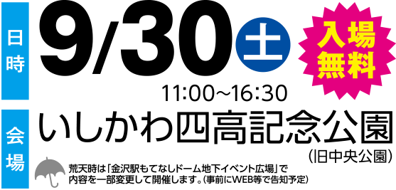

学びフェスタとは
一般社団法人 石川県専修学校各種学校連合会に加盟する学校が集結し、8分野に分かれ様々な体験やステージPRを通じて、専門職業について学ぶ一年に一度のイベント。専門的な知識や技術を手にすれば、あなたもきっと輝ける。まずは、このイベントでいろんな職業を見て・触れて・体感しよう！
一般社団法人 石川県専修学校各種学校連合会に加盟する学校が集結し、8分野に分かれ様々な体験やステージPRを通じて、専門職業について学ぶ一年に一度のイベント。専門的な知識や技術を手にすれば、あなたもきっと輝ける。まずは、このイベントでいろんな職業を見て・触れて・体感しよう！

ぶんぶんボウル まーし（左） とよしげ（右） よしもとクリエイティブ・エージェンシー所属のお笑い芸人。
東京NSC8期生。二人とも石川県白山市出身。2011年4月石川県住みます芸人に就任し、石川県を中心に活動。
テレビ金沢「となりのテレ金ちゃん」などレギュラー出演中。
近日公開！
２０１７は、遊学館高等学等・金沢市立工業高等学校・尾山台高等学校によるオープニング演奏をお楽しみ頂きます。
この日のために練習を積み重ねてきた高校生の皆さんの華麗な演奏・演技が会場全体を虜にすること間違いナシ！
専門学校３校による2017ファッションショーを開催！各校が専門分野を活かしてお届けする優美かつ華麗なファッションショーをご堪能あれ！ （参加校：専門学校金沢文化服装学院・石川県理容美容専門学校・Ｋｉｓｔ金沢科学技術専門学校）
石川県から発信するストリートダンスメインの特大イベント【STEP OUT】！！毎回１０００人規模が参加するの地元石川のストリートダンスイベントが今年は学びフェスタに参戦！！なんと、学びフェスタ2017の会場でSTEPOUT2017決勝大会を行う！地元石川の実力者の熱き戦いは必見！！
≫STEPOUT2017 決勝大会公式FB
石川県から発信するストリートダンスメインの特大イベント【STEP OUT】！！毎回１０００人規模が参加するの地元石川のストリートダンスイベントが今年は学びフェスタに参戦！！なんと、学びフェスタ2017の会場でSTEPOUT2017決勝大会を行う！地元石川の実力者の熱き戦いは必見！！
≫STEPOUT2017 決勝大会公式FB
スーパースイーツ製菓専門学校
将来パティシエを目指している方必見！砂糖の種類、砂糖の性質、その特性、性質を学び、最後は実際にカラフルな綿菓子を作る体験をします！
国際サイクル専門学校
自転車好き必見！！スポーツ自転車の試乗体験(固定式器具上での実施)が出来ます！
国際ホテル＆ブライダル専門学校
テーブルマナーについて、どれだけ知っていますか？テーブルナプキンの使い方やテーブルマナーについて１から学ぶ事が出来ます！
石川県理容美容専門学校
おしゃれ女子集まれ～！！自分スタイルのネイルアートをネイルチップに入れてもらうコーナーです♪
スーパースイーツ調理専門学校
将来コックを目指している方必見！パスタ生地を伸ばす所から教わり、ショートパスタを作ります。自分で作ったショートパスタはお持ち帰りいただけます♪
専門学校金沢美専
“美”について興味がある方必見！ウィッグを使用しての【ヘアアレンジ体験】や、アロマオイルを使用しての【ハンドマッサージ体験】をします。
国際ペット専門学校金沢
ペット好き集まれ～！！【わんちゃんの肉球マッサージ】や、自宅で出来る簡単【健康チェック】をお教えします！
Kist金沢科学技術専門学校
学生が制作したゲームを実際にタブレットなどで体験！また【木工体験】として、好きな木を選んでもらいカード立て作りをします！DIY好きは必見！
専門学校アリス学園
ハンドオイルを用い、学生がハンドマッサージを行います！癒されたい方は是非！！
金沢製菓調理専門学校
マジパンとはスペインやドイツ、シチリアなどの名物として知られているお菓子。人によって作り方や表現の仕方、表情の作り方は様々！まさにアート！！今回は花のバラ作りをします！
専門学校金沢文化服装学院
（自信がなくても好きならOK！）ファッションデザインを描いてみませんか？初めての方でも簡単に書けるコツを教えます！
北信越柔整専門学校
スポーツや病院・介護など様々な場所で活躍している「柔道整復師」という職業ご存知ですか？今回は、専門的な技術と知識が必要な「柔道整復師」についてDVDにてご紹介いたします。
日本航空大学校
学びフェスタの会場でドローン体験が出来る！？
①ドローン射的…紙コップタワーをドローンに搭載されているBB弾で倒す！
②ドローンでアメ玉運び…ドローンのハンドでアメをつかみ、指定の場所へ運ぶ。
専門学校金沢リハビリテーションアカデミー
-
金沢医療事務専門学校
医療事務のお仕事が体験出来る！！お薬の仕分けなどの【調剤薬局受付体験】、保険証の見方などを教えてもらえる【病院受付体験】また【血圧測定】も行います！
東部自動車学校 大徳自動車学校 ドライビングスクールエクシール城東
【追突衝撃体験】リアル！時速５キロで衝突した際の衝撃を体感！！
【反射神経測定】モグラ叩き？あなたの反射神経を測定
【酔っ払い体験】飲酒ゴーグルで酔っ払い体験！？
大原簿記情報法律専門学校金沢校
あなたは正解できるか！？フラッシュ式で出題される数字を、電卓で計算する【フラッシュ電卓】をゲーム感覚で体験しよう！！
金沢福祉専門学校
保育士、介護福祉士を目指す方必見！【大人も子供も楽しめるちぎり絵体験】【おまじないグッズ作り】【チラシで出来るインテリアグッズ作り】など将来 必ず役に立つ体験が満載！！
金沢調理師専門学校
お料理好き必見！おしゃれで可愛い【野菜の飾り切り体験】や、貴方の舌は食通？？数種類の出汁から正解を当てる【きき出汁体験】をします。

スーパースイーツ製菓専門学校
おいしく食べて、楽しく「イロんな職業」を学ぼう！